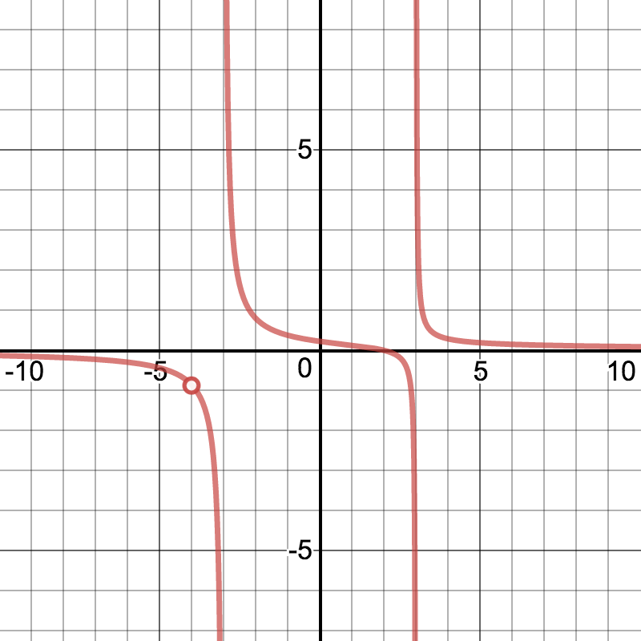

Introduction
-
James
- Hey guys, I slept through class yesterday... could you fill me in on what
a rational function is?
-
Julia
- See, class didn’t make a lot of sense to me because I was thinking,
“Functions can be rational?”
-
Dylan
- They don’t mean rational like me or you, Julia! It means the function
can be represented as a fraction where the numerator and denominator are
both polynomials.
-
Julia and James
- Oh!
-
Dylan
- Rational functions are pretty neat, because they can have two different
types of discontinuities!
-
Altogether
- LET’S DIVE IN!
Guided Example
Consider the function

Describe the graph. What strange things do you notice?
The vertical lines that the curve approaches at and is called a vertical asymptote,
another type of discontinuity.
On Your Own
Find and report the locations of discontinuities in the following functions, note that
at this time Desmos does not show removable discontinuities. You will need to find
those by hand:
How can you tell if a rational function has a vertical asymptote or a removable
discontinuity?
Vertical asymptotes occur where only the denominator approaches
zero, and removable discontinuities
occur where both the numerator and denominator approach zero.
Vertical
asymptotes occur where only the numerator approaches zero, and removable
discontinuities
occur where both the numerator and denominator approach zero.
Vertical
asymptotes occur where both the numerator and denominator approach zero, and
removable
discontinuities occur where only the denominator approaches zero.
Vertical
asymptotes occur where only the numerator approaches zero, and removable
discontinuities occur where only the denominator approaches zero.
In Summary
-
James
- These functions are pretty neat! What were they called again?
-
Dylan
- They’re called rational functions, fractions where the numerator and
denominator are both polynomials!
-
Julia
- So, when exactly does a vertical asymptote occur?
-
James
- I know this one! Vertical asymptotes occur at points where the
denominator of the function will be zero, but the numerator is non-zero!
-
Julia
- That makes sense! But when do removable discontinuities occur then?
-
Dylan
- Removable discontinuities occur where the numerator and
denominator are both zero.